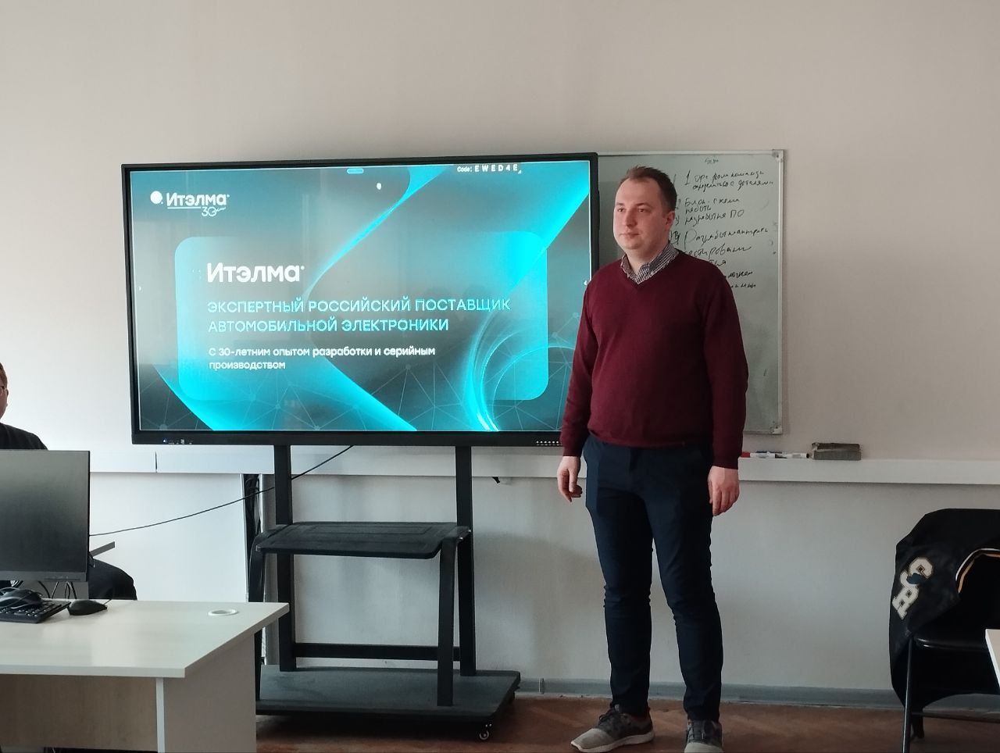

Пост 1: Начало проекта
Дата: 03.03.2025
Описание: Команда начала работу над проектом «Разработка аппаратно-программного комплекса дистанционного управления беспилотной техникой». Были определены цели, задачи и основные направления разработки. Обсуждалась архитектура веб-приложения, а также выбор технологий для реализации интерфейса и взаимодействия с оборудованием.
Пост 2: Разработка интерфейса и серверной части
Дата: 24.03.2025
Описание: На этой неделе началась разработка front-end части приложения — были созданы макеты пользовательского интерфейса, которые позволят оператору удобно управлять беспилотной техникой через веб-браузер. Были продуманы элементы управления, отображение данных с датчиков и индикаторы состояния устройства.
Параллельно активно развивалась back-end часть: настроили сервер и подготовили API для обмена данными между клиентом (веб-интерфейсом) и физическим устройством. Это позволяет отправлять команды управления и получать данные телеметрии в режиме реального времени.
Кроме того, мы определились с аппаратной платформой и начали программирование логики управления моторами колесной базы. Для реализации проекта выбраны следующие устройства:
- Arduino — используется как микроконтроллер для взаимодействия с драйверами мотор-колес и датчиками. Именно он отвечает за непосредственное управление движением устройства.
- Raspberry Pi — используется как мини-компьютер для запуска серверной части приложения и обеспечения связи с интернетом. Он выступает в роли шлюза между веб-интерфейсом и Arduino.
На данном этапе была настроена связь между Raspberry и Arduino по последовательному порту, а также реализованы первые тестовые команды для управления двигателями.
Пост 3: Встреча с заказчиком из НПП «Итэлма»
Дата: 28.04.2025
Описание: 28 апреля представитель заказчика из научно-производственного предприятия «Ителма» посетил нашу команду для личного общения и обсуждения текущего состояния проекта.

Во время встречи были рассмотрены ключевые аспекты разрабатываемого аппаратно-программного комплекса дистанционного управления беспилотной техникой через интернет. Заказчик подробно ознакомился с текущими результатами работы, включая реализованный интерфейс управления, настроенную связь между Raspberry Pi и Arduino, а также прототип колесной базы, управляемой через веб-браузер.
Были обсуждены следующие вопросы:
- Требования к надежности передачи данных через интернет;
- Необходимость поддержки мобильных устройств (iOS/Android);
- Формат отображения телеметрии в интерфейсе;
- Перспективы масштабирования системы под другие типы беспилотных устройств.
По итогам встречи были даны рекомендации по улучшению пользовательского интерфейса и повышению устойчивости соединения при слабом сигнале. Также было отмечено, что выбранный нами подход с использованием Raspberry Pi и Arduino является перспективным и соответствует целям проекта.
Встреча прошла в конструктивной и дружелюбной атмосфере. Полученные замечания и предложения будут учтены при дальнейшей доработке программно-аппаратного комплекса.